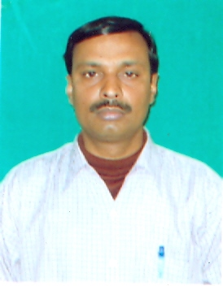
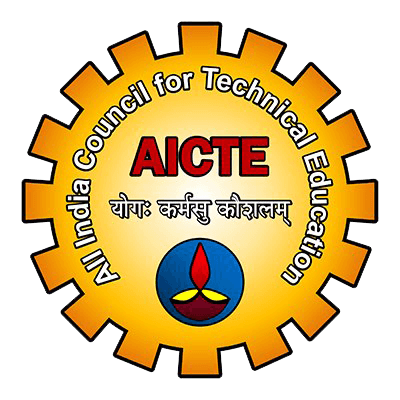

About Raj Kumar Samanta

Dr. Samanta is working as professor in the department of Computer
Science and Engineering at Dr. B.C. Roy Engineering College (BCREC),
Durgapur, West Bengal (India) - 713206 since 2013. Prior to joining
BCREC, he has served in different Central Goverment Organisations
at different academic and research positions. He graduated from NIT
Hamirpur, masters from MANIT Bhopal and got his research degree (Ph.D)
from NIT Durgapur. He published several research papers in reputed
international journals. Now, he is exploring this domain of teaching pedagogy.

All India Council for Technical Education (AICTE) LITE is a flagship
programme of AICTE, (Ministry of Education, Government of India) to
strengthen the ELITE National Engineering Leadership Cadre of student
software engineers and the National Education Policy (NEP) 2020 goal
to bring modern software engineering knowledge through proven Online
teaching-learning methods to a larger cross section of Institutions,
faculties and students. Over the next few years, LITE intends to bring
modern computer engineering knowledge to 24 Million children. The LITE
also aims to enable students to move beyond highly paying employment
opportunities into more challenging domains of entrepreneurship. The
programme is specifically designed to impart industry standard
training in Web Debelopment to students and bring mainstream industry
knowledge into classrooms. It will open up pathways for students from
all disciplines to gain access to this knowledge. Given the backdrop
of global demand for highly skilled software engineers due to the
accelarated digital transformation, LITE is expected to empower the
students with the skills to participate in such digital transformation
initiatives and our students stand a very high chance of receiving
high quality employment offers post this training.
Important Dates
May 26, 2021 - Applications Open
Aug 02, 2021 - Announcement of Selected 136 Institutions and Faculty
members.
Aug 18, 2021 - Announcement of LITE 50 institutes.
Aug 23, 2021 - Online Training of Faculty begins with WD101.
Sept 06, 2021 - Scheduled completion of WD101.
Sept 07, 2021 - Scheduled commencement date for WD201.
AICTE-Leadership in Teaching Excellence (LITE)
AICTE’s Leadership in Teaching Excellence (LITE), in partnership with
Pupilfirst, is a national programme to select and equip 50 colleges
and 50 schools with leadership in teaching excellence. Pupilfirst is a
founding member of National Educational Alliance for Technology (NEAT)
programme of the Ministry of Education, that is implemented by AICTE.
Pupilfirst’s mission is to enable teachers to transform classroom
education to a learner centered model and achieve near 100% learning
outcomes.
Progress of my Training
475 Academic Institutions from 28 states applied for the LITE program.
From this group, 136 Institutions across 22 States have qualified the
selection process provisionally. All qualified institutions may
download the AICTE Welcome Kit and follow instructions to send back
the signed and scanned copy of MOU by the Head of Institute before
13th August 2021. 50 Institutions shall form the founding batch of the
LITE programme.
LITE 50 - Higher Educational Institutes and Commencement of Faculty
Training.
The first batch of 50 institutions for the Leadership in Teaching
Excellence programme represent 16 states and comprises 1 Institute of
Eminence, 2 State Universities, 3 Deemed to be Universities, 2 Private
Universities, 26 Autonomous Colleges, 15 Affiliated Colleges and 1
Standalone institution.
List of Provisionally Selected Institutions
The list of institutions selected on a provisional basis for the
Academic Year 2021-22 along with names of two faculty members from the
institute are published. Training would be given for both the faculty
members